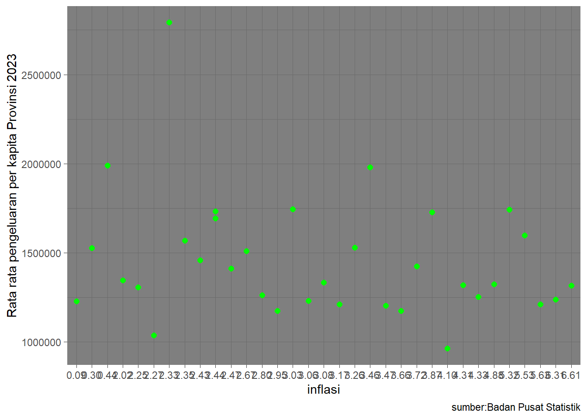

library("readxl")Warning: package 'readxl' was built under R version 4.3.2library("ggplot2")Warning: package 'ggplot2' was built under R version 4.3.2Metode Penelitian Politeknik APP Jakarta

Inflasi sebagai indeks kenaikan harga barang dan jasa secara umum memiliki dampak signifikan terhadap daya beli masyarakat. Oleh karena itu, penting untuk mengeksplorasi bagaimana tingkat inflasi dapat mempengaruhi pengeluaran per kapita sebulan bagi masyarakat di tingkat provinsi. Inflasi mempunyai dampak yang besar karena menentukan harga pasar atas segala sesuatu yang dibutuhkan masyarakat dalam kehidupan sehari-hari. Melalui analisis ini, dapat diidentifikasi daerah-daerah yang rentan terhadap perubahan ekonomi dan merancang kebijakan yang sesuai.
Inflasi, sebagai faktor yang cukup berpengaruh dan tidak dapat dihindari dalam menentukan nilai uang, seharusnya menjadi pertimbangan utama saat merencanakan keuangan, termasuk perencanaan keuangan rumah tangga. Kenaikan harga barang konsumsi dan jasa akibat inflasi dapat berdampak pada peningkatan anggaran pengeluaran, yang pada gilirannya dapat mengurangi alokasi anggaran untuk menabung dan potensial mengganggu rencana keuangan di masa depan. Ketidakperhitungan terhadap inflasi dapat berakibat pada ketidakmencapaian tujuan yang telah ditetapkan dalam perencanaan keuangan keluarga.
Penelitian ini memfokuskan pada hubungan antara inflasi dengan pengeluaran per kapita sebulan di tingkat provinsi di Indonesia pada tahun 2023. Data yang digunakan mencakup indeks inflasi dan statistik pengeluaran rumah tangga. Ruang lingkup penelitian mencakup identifikasi pola, perbedaan, dan potensi faktor-faktor yang memengaruhi hubungan antara inflasi dan pengeluaran per kapita di tingkat provinsi pada Tahun 2023.
Tujuan utama penelitian ini adalah untuk menganalisi nilai inflasi pada tahun 2023 dan melihat tingkat pengeluaran per kapita sebulan di setiap provinsi di Indonesia pada tahun 2023 dan juga memberikan pemahaman yang lebih baik tentang hubungan antara inflasi dan pengeluaran per kapita sebulan pada tahun 2023.
Manfaat dari dilakukannya penelitian ini diharapkan dapat memberikan pemahaman lebih baik dan relevan terkait tingkat inflasi dan Rata‑Rata Pengeluaran per Kapita Sebulan Untuk Makanan dan Bukan Makanan di Daerah Perkotaan dan Perdesaan Menurut Provinsi pada Tahun 2023, serta memberi pemahaman terkait hubungan antara kedua hal tersebut dari segi ekonomi.
Penelitian ini menggunakan Packages antara lain sebagai berikut:
library("readxl")Warning: package 'readxl' was built under R version 4.3.2library("ggplot2")Warning: package 'ggplot2' was built under R version 4.3.2Sejumlah penelitian telah mencoba menganalisis dampak tingkat inflasi terhadap pengeluaran per kapita sebulan di tingkat provinsi dengan fokus pada tahun 2023, dengan tujuan untuk memahami variabilitas dan pola perilaku yang mungkin terjadi.
Selain itu, beberapa penelitian telah menyoroti pentingnya mempertimbangkan faktor-faktor lain yang mungkin memoderasi atau memperkuat hubungan antara inflasi dan pengeluaran per kapita sebulan, seperti kebijakan fiskal dan moneter, tingkat pertumbuhan ekonomi, dan struktur industri regional.
Menurut Nopirin (2009: 25), in-flasi adalah proses kenaikan harga-harga umum barang-barang secara terus menerus. Dalam artian bahwa harga-harga berbagai macam barang itu mengalami kenaikan yang sama. Hukum ekonomi mengenai hu-bungan konsumsi makanan dan kon-sumsi non makanan terhadap kese-jahteraan dikemukakan oleh Engel. Menurut Engel, bila selera tidak ber-beda maka persentase pengeluaran untuk makanan cenderung menurun dengan semakin meningkatnya pendapatan.
Oleh karena itu, studi pustaka ini menyajikan landasan teoritis dan metodologis yang kokoh untuk menjelajahi hubungan antara inflasi dengan pengeluaran per kapita sebulan menurut provinsi pada tahun 2023. Dengan mempertimbangkan penelitian terdahulu dan menggunakan pendekatan analisis yang tepat, diharapkan studi ini dapat memberikan wawasan berharga untuk pemahaman lebih lanjut terhadap dinamika ekonomi regional di Indonesia pada periode yang bersangkutan.
Data yang saya gunakan adalah data mengenai Inflasitiap Provinsi dan Rata‑Rata Pengeluaran per Kapita Sebulan Untuk Makanan dan Bukan Makanan di Daerah Perkotaan dan Perdesaan Menurut Provinsi pada Tahun 2023
| Provinsi | Inflasi(%) | Rerata pengeluaran per-kapita (Rp) |
|---|---|---|
| Aceh | 0.09 | 1225976,196 |
| Sumatera Utara | 2.25 | 1305339,35417501 |
| Sumatera Barat | 2.47 | 1411823,46156525 |
| Riau | 3.26 | 1527549,35463015 |
| Jambi | 3.27 | 1424125,40045519 |
| Sumatera Selatan | 3.17 | 1209985,9651735 |
| Bengkulu | 3.08 | 1332558,38021223 |
| Lampung | 3.47 | 1203017,30554308 |
| Bangka Belitung | 3.87 | 1727549,80459025 |
| Kepulauan Riau | 0.44 | 1989702,53353369 |
| DKI Jakarta | 2.33 | 2791715,75397124 |
| Jawa Barat | 2.35 | 1567666,15370039 |
| Jawa Tengah | 5.63 | 1209906,17759961 |
| DI Yogyakarta | 2.44 | 1731559,93266979 |
| Jawa Timur | 4.88 | 1323486,25558119 |
| Banten | 3.03 | 1743686,86108108 |
| Bali | 5.32 | 1741522,78235967 |
| Nusa Tenggara Barat | 2.80 | 1260820,06686304 |
| Nusa Tenggara Timur | 4.10 | 961372,225842616 |
| Kalimantan Barat | 2.02 | 1345552,26246121 |
| Kalimantan Tengah | 0.30 | 1525785,00534261 |
| Kalimantan Selatan | 2.43 | 1457344,31928447 |
| Kalimantan Timur | 3.46 | 1980274,8643472 |
| Kalimantan Utara | 2.44 | 1693576,899969 |
| Sulawesi Utara | 6.61 | 1315176,48638862 |
| SulawesiTengah | 2.95 | 1173679,46532413 |
| Sulawesi Selatan | 4.33 | 1252551,24238984 |
| Sulawesi Tenggara | 3.66 | 1172739,17871271 |
| Gorontalo | 3.06 | 1228893,40204045 |
| Sulawesi Barat | 2.27 | 1036520,07871787 |
| Maluku | 6.31 | 1238170,28016571 |
| Maluku Utara | 4.31 | 1317159,41945245 |
| Papua Barat | 5.53 | 1598253,62250542 |
| Papua | 2.67 | 1509992,40103407 |
Penelitian ini menggunakan data yang bersumber dari Badan Pusat Statistik (BPS)
Baca Data
library("readxl")
dat<-read_excel("inflasi dan rata rata pengeluaran.xlsx")New names:
• `` -> `...3`head(dat)# A tibble: 6 × 3
x y ...3
<chr> <dbl> <chr>
1 0.09 1225976. Aceh
2 2.25 1305339. Sumatera Utara
3 2.47 1411823. Sumatera Barat
4 3.26 1527549. Riau
5 3.72 1424125. Jambi
6 3.17 1209986. Sumatera Selatanlibrary("ggplot2")
ggplot(data=dat,aes(x=x,y=y))+
geom_point(color="green",size=2)+
labs("Title 1 Melihat Hubungan antara Inflasi dengan Rata‑Rata Pengeluaran per Kapita Sebulan Untuk Makanan dan Bukan Makanan di Daerah Perkotaan dan Perdesaan Menurut Provinsi pada Tahun 2023",
x="inflasi",
y="Rata rata pengeluaran per kapita Provinsi 2023",
caption = "sumber:Badan Pusat Statistik")+
theme_dark()
Metode yang dipilih adalah regresi univariat atau Ordinary Least Square (OLS) dengan 1 variabel independen. Penelitian ini merbaksud mencari hubungan antara Inflasi dan Rata‑Rata Pengeluaran per Kapita Sebulan Untuk Makanan dan Bukan Makanan di Daerah Perkotaan dan Perdesaan Menurut Provinsi Pada Tahun 2023.
Spesifikasi yang dilakukan adalah:
\[ y_{t}=\beta_0 + \beta_1 x_t+\mu_t \] di mana \(y_t\) adalah Rata rata Pengeluaran per kapita sebulan dan \(x_t\) adalah Inflasi.
Dalam penelitian ini, analisis yang saya gunakan adalah metode OLS untuk mengaitkan data Inflasi provinsi dengan angka rata rata pengeluaran per kapita sebulan untuk mkanan dan non-makanan di wilayah provinsi pada tahun 2023. Data inflasi provinsi dan data rata rata pengeluaran per kapita sebulan tersebut telah digabungkan dan disesuaikan untuk analisis regresi.
library("readxl")
dat<-read_excel("inflasi dan rata rata pengeluaran.xlsx")New names:
• `` -> `...3`head(dat)# A tibble: 6 × 3
x y ...3
<chr> <dbl> <chr>
1 0.09 1225976. Aceh
2 2.25 1305339. Sumatera Utara
3 2.47 1411823. Sumatera Barat
4 3.26 1527549. Riau
5 3.72 1424125. Jambi
6 3.17 1209986. Sumatera SelatanTampilan data yang dihasilkan dari regresi tersebut adalah sebagai berikut.
reg1<-lm(x~y,data=dat)
summary(reg1)
Call:
lm(formula = x ~ y, data = dat)
Residuals:
Min 1Q Median 3Q Max
-3.3883 -0.7724 -0.1649 0.8080 3.2136
Coefficients:
Estimate Std. Error t value Pr(>|t|)
(Intercept) 4.605e+00 1.157e+00 3.978 0.000372 ***
y -9.187e-07 7.740e-07 -1.187 0.243940
---
Signif. codes: 0 '***' 0.001 '**' 0.01 '*' 0.05 '.' 0.1 ' ' 1
Residual standard error: 1.522 on 32 degrees of freedom
Multiple R-squared: 0.04218, Adjusted R-squared: 0.01225
F-statistic: 1.409 on 1 and 32 DF, p-value: 0.2439Dari hasil regresi yang sudah dilakukan dapat dilihat bahwa adanya hubungan antara Inflasi dengan Rata‑Rata Pengeluaran per Kapita Sebulan Untuk Makanan dan Bukan Makanan di Daerah Perkotaan dan Perdesaan Menurut Provinsi, meskipun tidak signifikan. Dimana setiap adanya peningkatan pendapatan per kapita sebulan di wilayah provinsi sebesar Rp.500.000, maka terdapat juga penurunan inflansi sebesar 9.187 persen.
Dari hasil tersebut, dapat disimpulkan bahwa Inflasi berpengaruh negatif tidak signifikan terhadap angka Rata‑Rata Pengeluaran per Kapita Sebulan Untuk Makanan dan Bukan Makanan di Daerah Perkotaan dan Perdesaan Menurut Provinsi pada tahun 2023.
Inflasi. (t.t.). Diambil 11 Januari 2024, dari https://www.bi.go.id/id/fungsi-utama/moneter/inflasi/default.aspx
Pengertian Inflasi Hingga Dampak Pada Perencanaan Keuangan. (t.t.). Insurance Site. Diambil 11 Januari 2024, dari https://www.manulife.co.id/id/artikel/pengertian-inflasi-hingga-dampak-pada-perencanaan-keuangan.html
Rata Rata Pengeluaran per Kapita Sebulan Untuk Makanan dan Bukan Makanan di Daerah Perkotaan dan Perdesaan Menurut Provinsi (rupiah), 2011-2023—Tabel Statistik—Badan Pusat Statistik Indonesia. (t.t.). Diambil 11 Januari 2024, dari https://www.bps.go.id/id/statistics-table/1/OTQ1IzE=/rata-rata-pengeluaran-per-kapita-sebulan-untuk-makanan-dan-bukan-makanan-di-daerah-perkotaan-dan-perdesaan-menurut-provinsi–rupiah—2011-2023.html